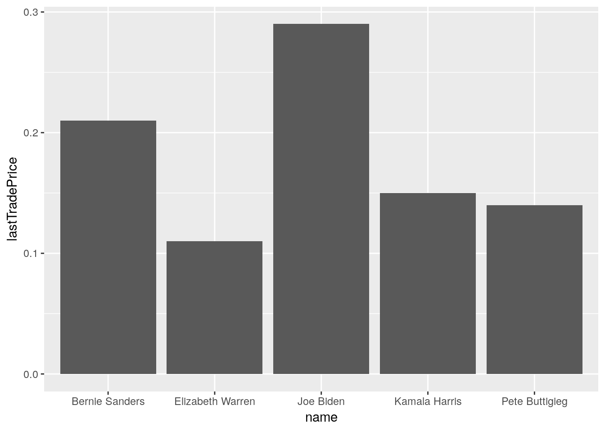

16 Internet data
One of the unique advantages that R has over traditional data analysis software is the ability to collect data from the Internet. It has many ways to do this, but we’ll focus on the use of APIs because they are especially popular and easy to use.
- What is an API?
- How do I connect to one?
- How do I turn the data into an analyzable format?
16.1 API Background
“API” is short for Application-programming interface. In short, it is a framework for using code to interact with some application. Most often, we are talking about RESTful APIs, which are a common kind of API that you can access on the internet. These APIs use web-links to send information to a server, that will then send you special information, depending on the link you gave it. If you have ever used participant-specific links in Qualtrics, this is a lot like that.
To see how this works, let’s look at the PredictIt.org API. PredictIt is a prediction market, where people place bets one political events that will happen in the future (e.g., that the next supreme court justice will leave the court by the end of the year, who will win the 2020 presidential race, etc.). Here, we focus on this API because it is especially easy to use and it doesn’t require you to register for anything (many do, but it’s often free).
When we go to PredictIt.org, we can see a number of popular betting markets. At the time this chapter was written, the most popular market was the Democratic Nominee market (i.e., who will be the US democratic nominee in 2020?). This market has several different options, as well as prices for each of these options (you can buy “yes” or “no” for any of them). The prices are determined by what people are willing to pay for them, so a higher price means more people believe that event will occurr. For example, Joe Biden is the highest at 28 cents, suggesting that on average the people in the market think he is most likely to win right now. Andrew Yang is also at a shockingly high 9 cents, which I admit I would not have predicted one year ago.
Wouldn’t it be nice if we could use code to get all these data into R to analyze? Here’s how.
16.2 Connecting to an API
Not all websites have APIs, but PredictIt does and you can read about it here. As the website explains, you can get all the data from their markets, but accessing a specific link:
Conveniently, if you navigate to that link with a webbrowser, you can see all the data. Unfortunately, it is in a really inconvenient format.
To get R to access the data for us, we need to use the httr package (“HTTR” for “hyper-text transfer request”).
install.packages('httr')Once we load the package, we simply tell R what website to GET() for us. In this case, that’s the link that PredictIt gave for their data.
library(httr)
api_url <- 'https://www.predictit.org/api/marketdata/all/'
predictit_data <- GET(api_url)The predictit_data object we made is large, so I won’t display it here. However, you’ll notice that it has several parts that you can explore in the top-right panel of RStudio.
What we care about first is the status_code, this should be 200. If it is anything else, the request didn’t work right.
predictit_data$status_code## [1] 20016.3 Working with API data
This has all been great so far, but where are the data? Well, they come in binary format, which is not really human readable. For example, this is what the content of the server’s response looks like.
head(predictit_data$content, n = 100)## [1] 7b 0d 0a 20 20 22 6d 61 72 6b 65 74 73 22 3a 20 5b 0d 0a 20 20 20 20
## [24] 7b 0d 0a 20 20 20 20 20 20 22 69 64 22 3a 20 32 37 32 31 2c 0d 0a 20
## [47] 20 20 20 20 20 22 6e 61 6d 65 22 3a 20 22 57 68 69 63 68 20 70 61 72
## [70] 74 79 20 77 69 6c 6c 20 77 69 6e 20 74 68 65 20 32 30 32 30 20 55 2e
## [93] 53 2e 20 70 72 65 73 69To turn it into a workable dataset, we need to use four steps.
- Use the
content()function fromhttr. This will give use our data in JSON format, which you can read about here (it’s popular, so you’ll see it again someday). - We can decode that JSON data using the
jsonlite::fromJSON()command. Thejsonlitepackage should already have come with R, but keep in mind you might need to install it. - Turn the result into a dataframe, which has one column that contains dataframes in it (take a look at “markets.contracts”).
unnest()that list column so we have a regular old dataframe.
library(tidyverse)
df <- predictit_data %>%
content(as = 'text') %>%
jsonlite::fromJSON() %>%
as.data.frame() %>%
unnest(markets.contracts)
head(df)## markets.id markets.name
## 1 2721 Which party will win the 2020 U.S. presidential election?
## 2 2721 Which party will win the 2020 U.S. presidential election?
## 3 2721 Which party will win the 2020 U.S. presidential election?
## 4 2721 Which party will win the 2020 U.S. presidential election?
## 5 2747 Will Mark Cuban run for president in 2020?
## 6 2875 Will Andrew Cuomo run for president in 2020?
## markets.shortName
## 1 Which party wins the Presidency in 2020?
## 2 Which party wins the Presidency in 2020?
## 3 Which party wins the Presidency in 2020?
## 4 Which party wins the Presidency in 2020?
## 5 Will Cuban run in 2020?
## 6 Will Cuomo run in 2020?
## markets.image
## 1 https://az620379.vo.msecnd.net/images/Markets/66c1cd46-cf5d-48a7-82ca-f6b11031e0ed.png
## 2 https://az620379.vo.msecnd.net/images/Markets/66c1cd46-cf5d-48a7-82ca-f6b11031e0ed.png
## 3 https://az620379.vo.msecnd.net/images/Markets/66c1cd46-cf5d-48a7-82ca-f6b11031e0ed.png
## 4 https://az620379.vo.msecnd.net/images/Markets/66c1cd46-cf5d-48a7-82ca-f6b11031e0ed.png
## 5 https://az620379.vo.msecnd.net/images/Markets/ac8830d9-a557-4fc0-9eab-fd50eefa4d6a.png
## 6 https://az620379.vo.msecnd.net/images/Markets/b8dc677d-e8a2-4795-8dad-0b9320b5140b.png
## markets.url
## 1 https://www.predictit.org/markets/detail/2721/Which-party-will-win-the-2020-US-presidential-election
## 2 https://www.predictit.org/markets/detail/2721/Which-party-will-win-the-2020-US-presidential-election
## 3 https://www.predictit.org/markets/detail/2721/Which-party-will-win-the-2020-US-presidential-election
## 4 https://www.predictit.org/markets/detail/2721/Which-party-will-win-the-2020-US-presidential-election
## 5 https://www.predictit.org/markets/detail/2747/Will-Mark-Cuban-run-for-president-in-2020
## 6 https://www.predictit.org/markets/detail/2875/Will-Andrew-Cuomo-run-for-president-in-2020
## markets.timeStamp markets.status id dateEnd
## 1 2019-05-01T12:22:28.1560744 Open 4390 N/A
## 2 2019-05-01T12:22:28.1560744 Open 4389 N/A
## 3 2019-05-01T12:22:28.1560744 Open 4388 N/A
## 4 2019-05-01T12:22:28.1560744 Open 4391 N/A
## 5 2019-05-01T12:22:28.1560744 Open 4495 2020-11-03T23:59:00
## 6 2019-05-01T12:22:28.1560744 Open 5121 2020-11-03T00:00:00
## image
## 1 https://az620379.vo.msecnd.net/images/Contracts/small_dc2c8290-c5d5-4561-8c1a-31762c3972bb.png
## 2 https://az620379.vo.msecnd.net/images/Contracts/small_2482e38e-80aa-4ff0-b1e2-9c29a0f100bc.png
## 3 https://az620379.vo.msecnd.net/images/Contracts/small_9d46f92f-fc2d-406a-ade9-8cf2eb41e64e.png
## 4 https://az620379.vo.msecnd.net/images/Contracts/small_5a27f11b-6e7e-4dd6-9d6b-48dafd96b436.png
## 5 https://az620379.vo.msecnd.net/images/Contracts/small_ac8830d9-a557-4fc0-9eab-fd50eefa4d6a.png
## 6 https://az620379.vo.msecnd.net/images/Contracts/small_b8dc677d-e8a2-4795-8dad-0b9320b5140b.png
## name
## 1 Democratic
## 2 Republican
## 3 Libertarian
## 4 Green
## 5 Will Mark Cuban run for president in 2020?
## 6 Will Andrew Cuomo run for president in 2020?
## longName
## 1 Will the Democratic Party win the White House in 2020?
## 2 Will the Republican Party win the White House in 2020?
## 3 Will the Libertarian Party win the White House in 2020?
## 4 Will the Green Party win the White House in 2020?
## 5 Will Mark Cuban run for president in 2020?
## 6 Will Andrew Cuomo run for president in 2020?
## shortName status lastTradePrice bestBuyYesCost
## 1 Democratic Open 0.58 0.58
## 2 Republican Open 0.44 0.45
## 3 Libertarian Open 0.02 0.03
## 4 Green Open 0.02 0.03
## 5 Will Cuban run in 2020? Open 0.09 0.12
## 6 Will Cuomo run in 2020? Open 0.05 0.07
## bestBuyNoCost bestSellYesCost bestSellNoCost lastClosePrice displayOrder
## 1 0.43 0.57 0.42 0.58 0
## 2 0.56 0.44 0.55 0.45 0
## 3 0.98 0.02 0.97 0.02 0
## 4 0.98 0.02 0.97 0.02 0
## 5 0.89 0.11 0.88 0.10 0
## 6 0.95 0.05 0.93 0.05 0Now that we’ve done all this work, let’s make a figure for the democratic nominee prices. Below, we look for the market we want in our df. In this case, it’s short name is “2020 Democratic nominee?”. We then sort rows by the last trade price for each nominee and take the top 5 (using head()). Using ggplot() we then look at the prices for the top 5 candidates. At the time of this writing, it looks like Biden is in a clear lead.
nominee_df <- df %>%
filter(markets.shortName == '2020 Democratic nominee?') %>%
arrange(-lastTradePrice) %>%
head(n = 5)
ggplot(nominee_df, aes(name, lastTradePrice)) +
geom_bar(stat = 'identity')